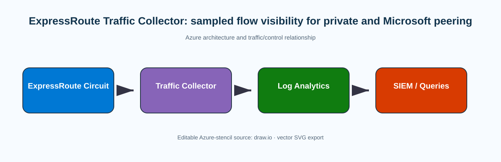
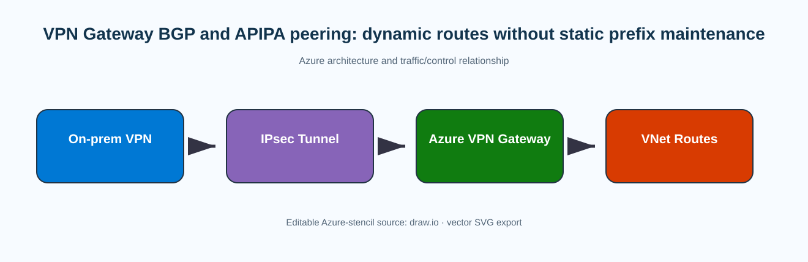
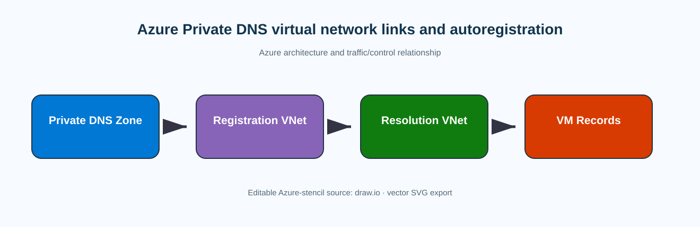
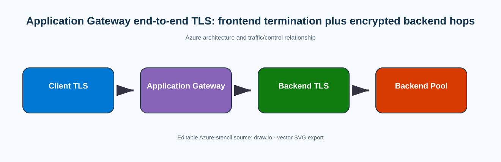
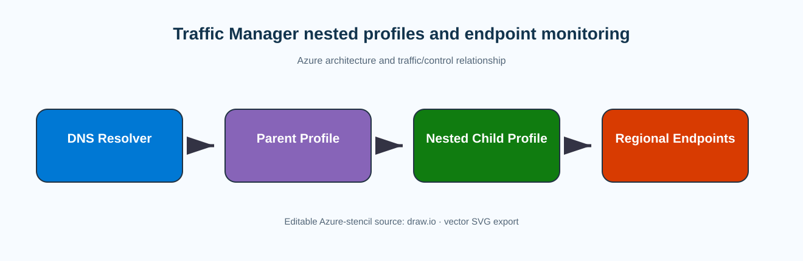
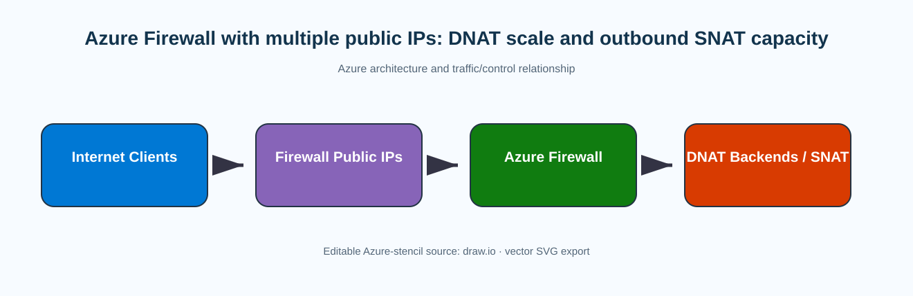
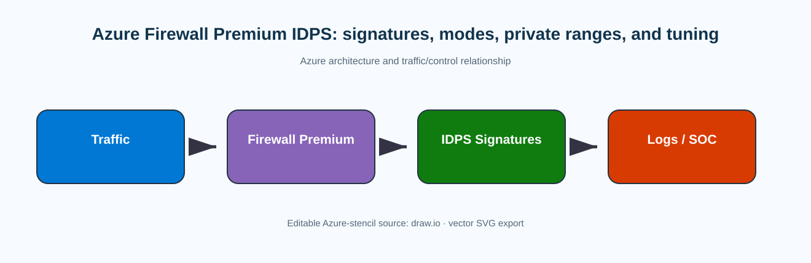

Azure Networking Specialty Daily Interactive Study Report
Report date: September 8, 2026 · Edition: 08:00 PT.
This edition contains twelve new, non-repeated lessons selected against the rolling 30-day ledger. Architecture diagrams are full-width Azure-stencil draw.io/SVG pairs. Implementation sections use current Microsoft-documented CLI, PowerShell, or supported automation surfaces; verification and troubleshooting include representative output so configuration can be tied to actual operational evidence.
Today’s 12 lessons
- ExpressRoute Traffic Collector: sampled flow visibility for private and Microsoft peering (728 words)
- VPN Gateway BGP and APIPA peering: dynamic routes without static prefix maintenance (759 words)
- Point-to-Site custom routes and forced tunneling: controlling what remote clients send into Azure (779 words)
- Azure Private DNS virtual network links and autoregistration (768 words)
- Azure Virtual Network encryption: host-to-host encryption inside a VNet (746 words)
- Application Gateway end-to-end TLS: frontend termination plus encrypted backend hops (750 words)
- Azure Load Balancer distribution modes: five-tuple hashing versus session persistence (745 words)
- Traffic Manager nested profiles and endpoint monitoring (763 words)
- Network Watcher NSG diagnostics: simulate policy across NIC, subnet, and admin rules (745 words)
- Azure Firewall with multiple public IPs: DNAT scale and outbound SNAT capacity (732 words)
- Azure Firewall Premium IDPS: signatures, modes, private ranges, and tuning (749 words)
- Azure Network Security Perimeter: PaaS public-access boundaries and transition to enforcement (742 words)
ExpressRoute Traffic Collector: sampled flow visibility for private and Microsoft peering
Why it matters
ExpressRoute circuits are often treated as a black box once BGP is established: operators can see interface utilization on customer routers and high-level circuit metrics in Azure, but they may still lack a workload-oriented view of who is consuming the private or Microsoft peering. ExpressRoute Traffic Collector fills that observability gap by sampling flows traversing supported circuits and exporting records for analysis. The feature matters most in large hybrid estates where a capacity spike, unexpected destination, or security investigation cannot be solved by looking only at aggregate bandwidth. It gives you source and destination addresses, ports, protocol-related fields, BGP next-hop context, and timestamps that can be queried in Log Analytics or sent to other destinations. Because the collector is sampled telemetry rather than a packet recorder, it is useful for trends, top-talkers, forensic pivots, and capacity planning, not for proving every short transaction or reconstructing payloads.
Architecture
The collector is an Azure resource associated with one or more ExpressRoute circuits. It observes eligible private-peering and Microsoft-peering traffic, samples packets at a fixed rate, aggregates the sampled information into flow records, and exports those records. Microsoft documents a sampling ratio of 1:4096 and one-minute flow collection behavior; those values are fixed rather than tunable knobs. The circuit continues forwarding independently of the collector, so failure of the monitoring path does not become a forwarding-path outage. That separation is important operationally: the data plane is CE-to-MSEE-to-Azure or Microsoft service traffic, while the collector is an out-of-band telemetry consumer. A Log Analytics workspace is a common destination, but the service also supports other export targets such as Event Hubs and Storage. The collector, circuits, and Log Analytics workspace must respect Microsoft’s geopolitical-region association rules, even when subscriptions differ. Supported circuit size is currently 1 Gbps through 100 Gbps; 200- and 400-Gbps Direct circuits are not supported by this feature.

Prerequisites and implementation
Start by identifying the circuits that need visibility and confirming that each is at least 1 Gbps and has private peering or Microsoft peering configured. Confirm regional support, contributor permissions on the collector and circuit, and Monitor Contributor on the Log Analytics workspace. A single collector can be associated with multiple circuits, but Microsoft currently caps association at 20 circuits and 100 Gbps of total circuit bandwidth. The current Microsoft configuration article is portal-oriented, so do not invent an unsupported dedicated Azure CLI create command. Use the portal to create the ExpressRoute Traffic Collector, attach the circuits, and select the export destination. For automation pipelines, use the resource provider/API or template surface documented for your environment, then use generic Azure CLI resource inspection to verify the deployed object. After association, create a known traffic sample over ExpressRoute and wait for the collection/ingestion interval before deciding that telemetry is absent.
Configuration stanza
# The deployment workflow is currently portal/API oriented.
# After creating the collector and associating circuits, inspect the ARM resource.
az resource list --resource-group <resource-group> --resource-type Microsoft.NetworkFunction/azureTrafficCollectors --output table
# Confirm the circuit itself is provisioned before blaming telemetry.
az network express-route show --resource-group <resource-group> --name <circuit-name> --query "{state:circuitProvisioningState,provider:serviceProviderProvisioningState,bandwidth:serviceProviderProperties.bandwidthInMbps}" --output json
# Query recent collector records in the configured Log Analytics workspace.
az monitor log-analytics query --workspace <workspace-id> --analytics-query "<collector-table> | where TimeGenerated > ago(30m) | summarize flows=count() by SourceIp, DestinationIp | top 20 by flows desc"
Flow interpretation
A flow record is evidence that sampled traffic matching the record crossed the ExpressRoute observation point; it is not proof that every packet in the conversation was captured. If a 20-second application test does not appear, that can be a sampling artifact rather than a routing failure. For capacity work, aggregate over longer periods and compare collector data with circuit metrics and customer-router counters. For security investigations, pivot on a suspicious source or destination IP and correlate TimeGenerated with firewall, identity, or application logs. BgpNextHop can help distinguish routing paths when multiple next hops exist. When Microsoft peering is enabled, flow data can also help identify consumption patterns toward Microsoft public services without relying solely on Internet-facing telemetry. Treat TCP flags and byte counts as sampled indicators, not as a substitute for a full PCAP.
Enterprise scenario and limits
Consider a company with three regional data centers sharing two 10-Gbps ExpressRoute circuits. Users report periodic ERP slowness, but average circuit utilization looks acceptable. Traffic Collector reveals that a backup platform sends very large flows during the same window, concentrated on one destination range. The network team uses that evidence to move the backup schedule and confirm the next day that the top-talker pattern disappeared. A second use case is cost and capacity forecasting: by grouping sampled bytes by source prefix and business unit, the team can identify which estate is driving growth before purchasing more bandwidth. The design still needs humility about sampling. Very short-lived control transactions may never appear, and absence from collector data is not proof that a flow never existed. For packet-level timing, retransmission, MTU, or cryptographic troubleshooting, use packet capture or device-level telemetry instead.
Verification
az network express-route show -g <resource-group> -n <circuit-name> --query "{circuit:circuitProvisioningState,provider:serviceProviderProvisioningState}" -o json
az monitor log-analytics query --workspace <workspace-id> --analytics-query "<collector-table> | where TimeGenerated > ago(15m) | take 5"
{
"circuit": "Enabled",
"provider": "Provisioned"
}
Log Analytics result:
TimeGenerated SourceIp DestinationIp BgpNextHop
2026-09-08T15:14:00Z 10.20.4.18 10.80.10.25 192.0.2.10
...
The important proof is that the circuit is operational and fresh collector rows are arriving after the expected ingestion interval.Troubleshooting
az resource show --ids <traffic-collector-resource-id> -o jsonc
az monitor log-analytics query --workspace <workspace-id> --analytics-query "<collector-table> | where TimeGenerated > ago(1h) | summarize count()"
Representative failure state:
ExpressRoute circuit: Enabled / Provider Provisioned
Collector resource: provisioningState = Succeeded
Log query count over 1h: 0
Interpretation: forwarding is healthy and the collector resource exists, but telemetry is not arriving. Recheck circuit association, export destination, geopolitical-region compatibility, workspace permissions, and whether test traffic is long enough to be visible under 1:4096 sampling. Do not change BGP merely because sampled logs are empty.Scenario / implementation source: https://learn.microsoft.com/en-us/azure/expressroute/how-to-configure-traffic-collector
VPN Gateway BGP and APIPA peering: dynamic routes without static prefix maintenance
Why it matters
Static prefixes on VPN connections work for small sites, but they become operational debt when branch networks change or when multiple redundant tunnels must converge automatically. BGP on Azure VPN Gateway turns the site-to-site tunnel into a dynamic routing relationship. Azure and the on-premises VPN device exchange reachable prefixes, withdraw routes when a path disappears, and can support multi-tunnel failover without manually editing Local Network Gateway address spaces for every change. The feature is especially useful for active-active gateways, multi-site connectivity, and environments where the on-premises router already participates in BGP. The difficult part is not the concept of BGP itself; it is understanding which peer IP Azure uses, how APIPA changes session initiation, what prefixes Azure rejects, and how learned routes interact with VNet address spaces and other Azure routes.
Architecture
A route-based Azure VPN Gateway can run eBGP with the on-premises VPN device across the IPsec tunnel. Azure uses ASN 65515 by default unless you configure another supported ASN. Each gateway instance has a BGP peer IP associated with the GatewaySubnet; active-active gateways expose peer information for both instances. When an on-premises device uses a normal RFC1918 BGP peer address, Azure normally uses the gateway’s internal peer address from GatewaySubnet. APIPA is different. Microsoft supports custom Azure APIPA addresses in the 169.254.21.0 through 169.254.22.255 range. If the Local Network Gateway specifies an APIPA peer address, VPN Gateway selects the configured APIPA source. The on-premises device must initiate BGP when APIPA is used because Azure does not initiate peering from the APIPA source. Routes learned from one BGP peer can be propagated to other peers, enabling transit designs, but a route identical to a VNet prefix is rejected rather than replacing Azure’s connected VNet route.

Prerequisites and implementation
Use a route-based VPN Gateway and confirm that the on-premises VPN device supports BGP over the tunnel. Pick ASNs deliberately and make every peer IP unique. If APIPA is required because the device expects link-local BGP addressing, allocate Azure APIPA values only from Microsoft’s permitted range and avoid overlap with every other connected VPN device. Enable BGP on the gateway, set the ASN, and configure BGP settings on the Local Network Gateway. Active-active designs need both Azure instance peer addresses configured on the customer side if you want both paths used dynamically. Build the IPsec connection first, then validate the IKE/IPsec layer independently from BGP. A tunnel can be Connected while BGP is Idle because the peer IP, ASN, TCP/179 policy, or initiation behavior is wrong.
Configuration stanza
az network vnet-gateway update --resource-group <resource-group> --name <vpn-gateway> --set enableBgp=true bgpSettings.asn=<azure-asn>
az network local-gateway update --resource-group <resource-group> --name <local-network-gateway> --set bgpSettings.asn=<onprem-asn> bgpSettings.bgpPeeringAddress=<onprem-bgp-peer-ip>
# Inspect Azure peer addresses, including configured APIPA values.
az network vnet-gateway show -g <resource-group> -n <vpn-gateway> --query "bgpSettings" -o jsonc
Route behavior
Once Established, Azure advertises the VNet prefixes and learns permitted on-premises prefixes. A site adding 10.44.0.0/16 can advertise it through BGP without updating the Local Network Gateway address-space list as the routing source of truth. When one tunnel fails, the BGP adjacency disappears and its routes are withdrawn; the remaining path can become active according to BGP selection. This is a routing failover, so existing stateful sessions may still reset even when route convergence is fast. Watch for aggregate advertisements that accidentally include Azure VNet space. Azure rejects a BGP route that exactly matches a VNet prefix, and broad aggregates can create unexpected preferences for other destinations. Effective routes on workload NICs provide the Azure-side proof that the learned prefix is actually installed.
Enterprise scenario and pitfalls
A manufacturer has two edge firewalls and an active-active Azure VPN Gateway. Each firewall establishes an IPsec tunnel to each Azure instance and uses BGP so plant prefixes can change without central ticketing. During a migration, one firewall is configured with APIPA but the engineer waits for Azure to initiate the BGP session. IPsec is up, yet BGP remains Idle. The fix is to initiate the BGP connection from the on-premises device, matching Microsoft’s APIPA behavior. In another failure, both sessions are Established but one plant prefix is missing because an outbound route policy on the customer router never advertises it. The right diagnostic sequence is therefore tunnel state, BGP state, advertised/received routes, and finally the workload NIC effective route table—not repeatedly rebuilding the VPN connection.
Operational design detail
BGP timers and path policy should be changed only with a clear convergence objective. Azure VPN Gateway supports BGP as the dynamic exchange, but your customer-edge policy still determines which prefixes are originated and which path is preferred. Keep route filtering close to the edge so accidental aggregates are not propagated into Azure. During maintenance, withdraw a test prefix or one tunnel and watch the learned-route table change; that proves dynamic withdrawal rather than merely proving that the peer can establish. Record the expected AS path for important prefixes so a later route leak is visible in operational checks.
Verification
az network vnet-gateway list-bgp-peer-status -g <resource-group> -n <vpn-gateway> -o table
az network vnet-gateway list-learned-routes -g <resource-group> -n <vpn-gateway> -o table
Neighbor ASN State ConnectedDuration
169.254.10.1 65010 Connected 01:24:16
Network NextHop Origin AsPath
10.44.0.0/16 169.254.10.1 EBgp 65010
The useful evidence is an Established/Connected peer and the expected on-premises prefixes in the learned route table.Troubleshooting
az network vnet-gateway list-bgp-peer-status -g <resource-group> -n <vpn-gateway> -o jsonc
az network vnet-gateway list-learned-routes -g <resource-group> -n <vpn-gateway> -o table
Representative failure:
peer: 169.254.21.5
state: Idle
routes learned: none
VPN connectionStatus: Connected
Interpretation: IPsec is healthy but BGP is not. Confirm ASN and peer addresses, verify the customer device initiates the BGP session when APIPA is used, and confirm TCP/179 is permitted inside the tunnel. If the peer becomes Established but a prefix is still absent, inspect the customer router's export policy rather than changing Azure VPN cryptographic settings.Scenario / implementation source: https://learn.microsoft.com/en-us/azure/vpn-gateway/bgp-howto
Point-to-Site custom routes and forced tunneling: controlling what remote clients send into Azure
Why it matters
A point-to-site VPN client normally receives routes that make Azure virtual network prefixes reachable through the tunnel. Sometimes that default route set is not enough. Remote users may need to reach a service endpoint address, a peered network that is not automatically represented in the client package, or a set of corporate destinations that should be forced into the VPN. VPN Gateway custom routes let the gateway advertise additional prefixes to P2S clients. This is a client-routing function, not a new Azure route table and not a promise that Azure can provide Internet egress for the client. Understanding that distinction prevents one of the most common mistakes: advertising a default-like route to the client and then assuming VPN Gateway will act as an outbound Internet NAT device.
Architecture
The P2S client establishes the tunnel to VPN Gateway and installs routes received from the VPN configuration. The operating system then chooses between those routes and the local interface routes. Microsoft’s forced-tunneling method advertises 0.0.0.0/1 and 128.0.0.0/1 rather than 0.0.0.0/0, because the two /1 routes are more specific than the client’s ordinary local default route. That causes almost every IPv4 destination to prefer the VPN tunnel. However, Microsoft explicitly notes that Internet connectivity is not provided through VPN Gateway in this design, so Internet-bound traffic forced into the tunnel is dropped unless your architecture provides a supported path beyond the gateway. Custom routes can also be narrower, such as a Storage service endpoint prefix or a corporate CIDR reachable through peering or hybrid connectivity. The route tells the client where to send traffic; Azure routing and security still need to provide a valid path after the packet enters the VNet.
Prerequisites and implementation
Start with a functioning P2S deployment and confirm the client tunnel can already reach the primary VNet. Identify exactly which destination prefixes need to be inserted into client route tables. Avoid broad routes when a smaller prefix meets the requirement because broad custom routes can unintentionally capture local printers, home gateways, SaaS destinations, or split-tunnel traffic. Microsoft’s documented configuration surface for custom P2S routes uses Azure PowerShell on the Virtual Network Gateway object. Retrieve the gateway, apply the CustomRoute collection, and then regenerate or reconnect clients as required so the route set is refreshed. If you are advertising routes to reach peered VNets, confirm the peering allows the needed forwarding and that return routes exist. If a third-party NVA or on-premises path is the destination, validate that its return route includes the P2S client address pool.
Configuration stanza
# Microsoft documents P2S custom routes through Azure PowerShell.
$gw = Get-AzVirtualNetworkGateway -Name "<vpn-gateway>" -ResourceGroupName "<resource-group>"
Set-AzVirtualNetworkGateway -VirtualNetworkGateway $gw -CustomRoute "10.80.0.0/16","10.90.0.0/16"
# Forced-tunnel example from Microsoft: captures IPv4 using two more-specific /1 routes.
Set-AzVirtualNetworkGateway -VirtualNetworkGateway $gw -CustomRoute "0.0.0.0/1","128.0.0.0/1"
Routing example
Assume a remote laptop has local default route 0.0.0.0/0 through Wi-Fi, a P2S client pool address 172.20.10.5, and Azure custom routes 10.80.0.0/16 plus 10.90.0.0/16. Traffic to 10.80.5.20 and 10.90.1.10 uses the tunnel, while ordinary Internet traffic remains local. If the gateway advertises 0.0.0.0/1 and 128.0.0.0/1, both halves of IPv4 are more specific than the local /0, so Internet traffic is also pulled into the tunnel. The client route table therefore proves the first half of the design. The second half is Azure’s effective route from the gateway path toward the target, and the third is the return route back to the P2S pool. A firewall that knows only the VNet CIDR but not 172.20.0.0/16 can cause one-way sessions even though the client route is correct.
Enterprise scenario and failure boundaries
A consulting firm needs remote engineers to access a private artifact repository published through a specific corporate CIDR while leaving Microsoft 365 and general web browsing local. The team advertises only the repository and management prefixes rather than forced tunneling everything. One engineer cannot reach a peered VNet. The VPN client route print shows the prefix is present, so the issue is no longer client route installation. Network Watcher and effective-route checks reveal that a hub firewall has no return route to the P2S pool. Fixing that route restores access. In a separate test, the team advertises the two /1 prefixes and loses Internet access exactly as Microsoft warns. They roll back because the requirement was private-resource reachability, not Internet egress through VPN Gateway. This illustrates why custom-route design should be destination-driven rather than treated as a generic security switch.
Client operating-system considerations
Route installation is performed by the VPN client and operating system, so diagnostics should include the actual client table rather than only the gateway object. Windows, macOS, and OpenVPN-based clients can present routes differently, but the design principle is the same: the destination must be more specific than competing local routes if you expect the tunnel to win. Local subnet overlap is particularly important for remote workers; a home network using the same RFC1918 prefix as an Azure destination can create ambiguous or platform-specific behavior. Prefer enterprise address plans and advertised prefixes that minimize overlap rather than relying on client-side exceptions.
Verification
$gw = Get-AzVirtualNetworkGateway -Name "<vpn-gateway>" -ResourceGroupName "<resource-group>"
$gw.CustomRoutes | Format-List
# On a Windows client after reconnect:
route print
AddressPrefixes : {10.80.0.0/16, 10.90.0.0/16}
Client route table:
Network Destination Netmask Gateway/Interface
10.80.0.0 255.255.0.0 On-link (P2S interface)
10.90.0.0 255.255.0.0 On-link (P2S interface)
Success means the gateway advertises the intended prefixes and the reconnected client installs them through the VPN interface.Troubleshooting
$gw = Get-AzVirtualNetworkGateway -Name "<vpn-gateway>" -ResourceGroupName "<resource-group>"
$gw.CustomRoutes | Format-List
route print
tracert <private-destination>
Representative failure:
Gateway CustomRoutes: {10.90.0.0/16}
Client route print: no 10.90.0.0/16 route after an old client profile remains connected.
Interpretation: refresh/reconnect the VPN client so it receives the updated route set. If the route is present but tracert enters the tunnel and then stops, inspect Azure forwarding and the return route to the P2S client pool. If two /1 forced-tunnel routes are present and Internet stops working, that is expected VPN Gateway behavior unless another supported egress path is deliberately provided.Scenario / implementation source: https://learn.microsoft.com/en-us/azure/vpn-gateway/vpn-gateway-about-point-to-site-routing
Azure Private DNS virtual network links and autoregistration
Why it matters
Azure Private DNS gives workloads a centrally managed namespace that resolves only from linked virtual networks, avoiding the need to operate authoritative DNS VMs for many Azure-only records. Virtual network links are the mechanism that grants a VNet resolution access to a private zone. Autoregistration adds a second behavior: Azure automatically creates and removes A records for virtual machines in the linked registration VNet. The design is deceptively simple, but several constraints matter in real environments. A VNet can be linked to many private zones for resolution, yet it can have only one registration zone with autoregistration enabled. Autoregistration covers virtual machines, not arbitrary PaaS resources or internal load balancers, and it registers only the primary NIC. These boundaries determine whether Private DNS can serve as your service-discovery source of truth or whether you need explicit record automation.
Architecture
A Private DNS zone is a global Azure resource containing record sets. A virtual network link connects a VNet to the zone. When registration is disabled, the VNet is a resolution network: clients in that VNet can query records in the zone, but Azure does not create VM records from that VNet. When registration is enabled, the VNet is also a registration network. Azure tracks VM lifecycle events and maintains A records for primary NIC addresses. Multiple VNets can register into one zone, but one VNet cannot automatically register into multiple zones. The zone is not tied to one region, so the same namespace can serve spokes in different Azure regions. Split-horizon designs can use the same zone name publicly and privately, with linked VNet clients receiving the private-zone answer. Private DNS does not automatically provide on-premises resolution; hybrid clients need a resolver path such as Azure DNS Private Resolver or another conditional-forwarding design.

Prerequisites and implementation
Choose a zone name that represents the intended private namespace and decide which VNet, if any, should be the registration source. Create the private zone, then create links for each VNet. Use registration only where VM hostname records are actually desired. For application VNets that consume the zone but should not populate it, create resolution-only links. Avoid turning on autoregistration for a VNet simply because it is convenient; stale or unexpected hostnames can become an application dependency. For non-VM targets such as internal load balancers, create A or CNAME records explicitly. If a VM has multiple NICs, only the primary NIC is automatically represented, so secondary-interface services need manual records. Reverse PTR records are not generated by this feature. Use Azure CLI to create the zone and link so the intended registration behavior is visible in code review.
Configuration stanza
az network private-dns zone create --resource-group <resource-group> --name corp.internal
az network private-dns link vnet create --resource-group <resource-group> --zone-name corp.internal --name mgmt-registration-link --virtual-network <management-vnet-resource-id> --registration-enabled true
az network private-dns link vnet create --resource-group <resource-group> --zone-name corp.internal --name spoke-resolution-link --virtual-network <spoke-vnet-resource-id> --registration-enabled false
az network private-dns record-set a add-record -g <resource-group> -z corp.internal -n internal-lb -a 10.40.10.20
Resolution behavior
Suppose zone corp.internal contains db01.corp.internal = 10.40.2.10. Spoke-A and Spoke-B are linked for resolution, while Management-VNet is linked with registration enabled. A VM named jump01 deployed in Management-VNet receives 10.10.1.5 and Azure automatically creates jump01.corp.internal. Spoke clients can resolve both db01 and jump01 because they are linked to the same zone. A new VM in Spoke-A does not create a record because that link is resolution-only. If you stop or delete an autoregistered VM, Azure removes its managed record according to the autoregistration lifecycle. A manually created record is not owned by that process. This ownership distinction matters when automation and humans both edit the zone.
Enterprise scenario and troubleshooting boundaries
An enterprise uses corp.internal as a private service-discovery zone for management hosts across three regions. Only the central management VNet is a registration VNet; production spokes are resolution-only to prevent thousands of ephemeral application VMs from polluting the namespace. A team reports that an internal load balancer never appears automatically. That is expected because autoregistration is for VMs, so the platform team creates an explicit A record. Later, a VM with two NICs resolves only to its management NIC. Again the behavior is expected because only the primary NIC is auto-registered. The diagnostic path is to verify the VNet link, registrationEnabled flag, record ownership, and the DNS server configured on the client. If the client uses a custom DNS server that never forwards the zone to Azure, a perfect VNet link cannot make the query succeed.
Design boundaries
Private DNS links are authorization and visibility relationships, not packet-forwarding links. Linking two VNets to the same zone does not create network reachability between them, and a successful name lookup does not prove a TCP path. Likewise, autoregistration does not create service records for scale sets, PaaS private endpoints, or load balancer frontends merely because those resources sit in a linked VNet. Treat the zone as one layer of the architecture: network reachability, NSGs/firewalls, and application listeners remain separate. This separation is useful during incidents because you can prove DNS independently before moving to transport diagnostics.
Verification
az network private-dns link vnet list -g <resource-group> -z corp.internal -o table
az network private-dns record-set a list -g <resource-group> -z corp.internal -o table
nslookup jump01.corp.internal
Name RegistrationEnabled ProvisioningState
mgmt-registration-link True Succeeded
spoke-resolution-link False Succeeded
nslookup:
Name: jump01.corp.internal
Address: 10.10.1.5
The link state proves Azure configuration; the DNS answer proves the client resolver path reaches the zone.Troubleshooting
az network private-dns link vnet show -g <resource-group> -z corp.internal -n <link-name> -o jsonc
az network private-dns record-set a show -g <resource-group> -z corp.internal -n <hostname> -o jsonc
nslookup <hostname>.corp.internal
Representative failure:
link provisioningState: Succeeded
registrationEnabled: false
record-set lookup: ResourceNotFound
client query: NXDOMAIN
Interpretation: the VNet can resolve the zone but is not configured to auto-register VM records. Enable registration only if this VNet should be the single registration zone source, or create the record explicitly. If the record exists in Azure but the client still gets NXDOMAIN, inspect the client DNS server/forwarding path instead of recreating the zone.Scenario / implementation source: https://learn.microsoft.com/en-us/azure/dns/private-dns-autoregistration
Azure Virtual Network encryption: host-to-host encryption inside a VNet
Why it matters
Virtual Network encryption adds platform-managed encryption for supported private-IP traffic between virtual machines in the same VNet. It addresses a different boundary than TLS, IPsec, or disk encryption: east-west packets on the Azure virtual network fabric between supported VM endpoints. The feature is attractive when a security baseline requires encryption in transit even for internal server-to-server communication, but it is easy to overstate what it covers. Microsoft documents that encryption applies to private-IP-to-private-IP VM traffic in the VNet; traffic involving unsupported VM SKUs can remain unencrypted. The current generally available enforcement behavior is AllowUnencrypted, so enabling the feature does not mean the fabric will drop every packet that cannot be encrypted. That makes validation essential rather than assuming a configuration flag equals universal encrypted transport.
Architecture
Virtual Network encryption is configured on the VNet, while encryption capability depends on the VM platform. Supported VMs use the accelerated networking/data-path capabilities required by the feature. The encryption is handled by the Azure host/network fabric rather than by an IPsec tunnel configured inside the guest. Existing IP addressing, NSGs, UDRs, load balancers, and application sockets continue to operate normally; the added behavior is below those logical network controls. Microsoft notes that existing VMs need to be stopped and started after the feature is enabled so the required host configuration can take effect. A newly created supported VM in the encrypted VNet can participate immediately. Because unsupported VMs may still communicate under AllowUnencrypted, use VNet Flow Logs encryption state or other documented evidence to distinguish encrypted flows from fallbacks.
Prerequisites and implementation
Inventory the VM sizes in the target VNet before enabling encryption. Do not enable the feature where the VM SKU does not support Accelerated Networking or VNet encryption. Plan stop/start windows for existing workloads and consider HA pairs so one instance remains available while the other is recycled. The Microsoft how-to exposes portal, PowerShell, and Azure CLI paths. At the CLI layer, create or update the VNet with encryption enabled and the supported enforcement mode, then stop/deallocate and start existing VMs as required. Because the current GA enforcement permits unencrypted fallback, a mixed fleet is technically possible but may fail the spirit of a strict compliance requirement. If the requirement is “all east-west traffic must be cryptographically protected,” couple enablement with a supported-SKU inventory and flow-level validation rather than relying on the VNet property alone.
Configuration stanza
# Create a VNet with encryption enabled.
az network vnet create --resource-group <resource-group> --name <vnet-name> --location <region> --address-prefixes 10.20.0.0/16 --enable-encryption true --encryption-enforcement-policy allowUnencrypted
# Or inspect/update an existing VNet using the current CLI version.
az network vnet update -g <resource-group> -n <vnet-name> --enable-encryption true \
--encryption-enforcement-policy allowUnencrypted
# Existing VMs require a stop/start after enablement.
az vm deallocate -g <resource-group> -n <vm-name>
az vm start -g <resource-group> -n <vm-name>
Traffic scope and design consequences
Traffic from VM-A private IP 10.20.1.4 to VM-B private IP 10.20.2.5 inside the encrypted VNet can be protected by VNet encryption when both endpoints are supported. A connection from the same VM to an Internet public IP is outside this feature’s stated private-IP VM-to-VM scope. Likewise, traffic to a managed PaaS endpoint is governed by the service’s transport behavior, not by VNet encryption merely because a private route exists. Encryption also does not replace application authentication. A compromised VM can still make an encrypted connection to another VM if NSG and application policy allow it. Use this feature as transport protection underneath segmentation, identity, and application-layer controls.
Enterprise scenario and limits
A healthcare application has three tiers in one VNet: web, API, and database VMs. Security policy requires encrypted east-west transport even though the application already uses TLS for database sessions. The platform team enables VNet encryption to protect additional internal traffic that is not application-encrypted, but first discovers an old utility VM size that lacks support. They resize that utility VM, enable encryption, and recycle each VM in an availability design. VNet Flow Logs are then used to confirm the encryption state of representative flows. During troubleshooting, a team member sees the VNet property set to Enabled and assumes a legacy VM flow must be encrypted. The correct interpretation is more nuanced: the configured mode is AllowUnencrypted, so the endpoint capability and observed flow state must be checked. This is a good example of a control whose configuration and effective enforcement are not identical.
Operational design detail
Performance planning is also part of the encryption decision. Because Azure performs the protection in the host networking path, you should baseline latency and throughput before and after enablement for the workloads that matter, especially large east-west data transfers. The goal is not to assume a penalty but to have measurable evidence that the selected VM sizes and Accelerated Networking capabilities meet the application SLO. Include encryption state in build standards so future scale-out instances do not silently introduce unsupported SKUs. For disaster recovery, verify the secondary-region VNet and VM sizes independently; enabling encryption in one VNet does not automatically configure another VNet used by failover.
Verification
az network vnet show -g <resource-group> -n <vnet-name> --query encryption -o json
az vm show -g <resource-group> -n <vm-name> --query "{size:hardwareProfile.vmSize,power:powerState}" -d -o json
{
"enabled": true,
"enforcement": "AllowUnencrypted"
}
VM size: Standard_D4s_v5
Power state after recycle: VM running
The VNet property confirms configuration. For effective encryption, validate a representative supported VM-to-VM flow using VNet Flow Logs encryption state rather than treating Enabled as proof for every endpoint.Troubleshooting
az network vnet show -g <resource-group> -n <vnet-name> --query encryption -o json
az vm show -g <resource-group> -n <vm-name> --query hardwareProfile.vmSize -o tsv
Representative failure:
VNet encryption: enabled=true / AllowUnencrypted
VM-A: supported SKU
VM-B: legacy unsupported SKU
Observed flow encryption state: unencrypted
Interpretation: the configuration is active, but GA enforcement allows fallback. Move VM-B to a supported size and recycle it. Do not troubleshoot NSGs or routes when the issue is encryption capability; those controls can be completely healthy while the flow remains unencrypted.Scenario / implementation source: https://learn.microsoft.com/en-us/azure/virtual-network/how-to-create-encryption
Application Gateway end-to-end TLS: frontend termination plus encrypted backend hops
Why it matters
Application Gateway commonly terminates client TLS at the frontend, but many regulated or zero-trust designs also require encryption from the gateway to the backend. End-to-end TLS keeps HTTPS on both legs: client-to-gateway and gateway-to-backend. The gateway still decrypts the request so it can perform Layer-7 routing, WAF inspection, cookie affinity, and header processing, then it establishes a separate TLS session to the selected backend. That means there are two independent certificate validation problems. The frontend listener certificate proves the gateway’s identity to clients, while backend certificate validation proves that Application Gateway is talking to the intended server. A backend can be perfectly reachable at TCP/443 and still be marked unhealthy because its certificate chain or hostname does not match the backend HTTP setting.
Architecture
The frontend listener owns a certificate for the public or private application hostname. When a request arrives, Application Gateway completes the client TLS handshake and processes HTTP. A backend setting configured for HTTPS then causes the gateway to open a new TLS connection to the chosen backend. In v2, the gateway validates the backend certificate chain and the hostname used for backend communication; SNI is based on the configured host behavior. Publicly trusted backend certificates are simpler because their roots are already trusted. Private PKI or self-signed designs require a trusted root certificate in the backend setting. The health probe uses the same basic backend reachability and certificate model, so a certificate mismatch often appears first as Unhealthy backend health rather than as a client-facing TLS error. Since August 31, 2025, Microsoft requires TLS 1.2 or later for clients and backend servers interacting with Application Gateway.

Prerequisites and implementation
Start with Application Gateway v2, a listener certificate, backend pool, and backend HTTP setting. Ensure the backend certificate’s subject or SAN matches the hostname that Application Gateway will send and validate. If the backend uses a private CA, export the root CA certificate in the format Microsoft requires and attach it as a trusted root certificate. Configure the backend protocol as HTTPS and set the hostname explicitly when the backend target is an IP or when the desired SNI name differs from the pool object. Create a custom probe that uses the same hostname and a predictable health path. This keeps certificate and application health checks aligned. Avoid copying the frontend certificate to the backend simply for convenience unless that lifecycle truly fits both endpoints; separate certificates often give cleaner ownership.
Configuration stanza
# Backend HTTP setting using HTTPS.
az network application-gateway http-settings create --resource-group <resource-group> --gateway-name <app-gateway> --name backend-https --port 443 --protocol Https --host-name-from-backend-pool false --host-name orders-api.internal.contoso.com --timeout 30
# Create a custom HTTPS probe aligned to the backend hostname.
az network application-gateway probe create -g <resource-group> --gateway-name <app-gateway> -n orders-health --protocol Https --host orders-api.internal.contoso.com --path /health --interval 30 --timeout 30 --threshold 3
TLS flow and failure boundaries
For https://orders.contoso.com, the client validates the listener certificate presented by Application Gateway. The gateway decrypts the request, selects the orders pool, and then opens TLS to orders-api.internal.contoso.com. The backend server presents its certificate. Application Gateway validates the chain against trusted roots and verifies the hostname. If that succeeds, the HTTP request is sent through the encrypted backend session. A client can therefore see a clean frontend TLS handshake while the gateway returns 502 because every backend is unhealthy. Conversely, a backend can be healthy while clients fail because the public listener certificate is expired. Treat frontend and backend TLS as two separate diagnostic trees and use Backend Health to localize the problem.
Enterprise scenario and operational details
A bank exposes an internal payments API through a private Application Gateway. The gateway listener uses a certificate issued by the enterprise public-facing PKI, while backend servers use a private internal CA. The team uploads the internal root CA to the backend setting and configures SNI/hostname as payments-api.corp.internal. During certificate rotation, a server receives a certificate for payments-api2.corp.internal by mistake. TCP health remains reachable, but Application Gateway marks that server unhealthy because the certificate name no longer matches. The fix is certificate/hostname alignment, not a route change. Another common problem appears when a health probe uses 127.0.0.1 or the backend IP as Host while the server requires a named virtual host; the application returns a failure even though TLS is valid. Set the probe host and path to the actual backend contract.
Operational design detail
Certificate rotation needs its own runbook. Backend certificates can be renewed independently from the listener certificate, and a root CA change can make an entire pool unhealthy if the trusted-root configuration is not updated first. Stage new trust before replacing backend leaf certificates when the issuing chain changes. Use overlapping certificate validity so probes can prove the new chain before the old one is removed. When using autoscaling backends, bake the correct hostname and certificate chain into the deployment image or service configuration; otherwise a newly scaled instance can join the pool at the IP layer but remain unusable because Application Gateway rejects its TLS identity.
Verification
az network application-gateway show-backend-health -g <resource-group> -n <app-gateway> -o jsonc
az network application-gateway http-settings show -g <resource-group> --gateway-name <app-gateway> -n backend-https -o jsonc
backendAddress: 10.40.2.10
health: Healthy
httpSettings.protocol: Https
httpSettings.port: 443
hostName: orders-api.internal.contoso.com
Healthy backend status together with HTTPS backend settings proves the gateway is completing its probe path and backend TLS validation for that target.Troubleshooting
az network application-gateway show-backend-health -g <resource-group> -n <app-gateway> -o jsonc
openssl s_client -connect <backend-ip>:443 -servername orders-api.internal.contoso.com
Representative failure:
backend health: Unhealthy
details: Backend server certificate is invalid / hostname mismatch
openssl: certificate subject CN=orders-api2.internal.contoso.com
Interpretation: routing to the backend and TCP/443 may be fine, but Application Gateway rejects the TLS identity. Install a certificate whose SAN/CN matches the configured backend hostname, or correct the hostname setting. Do not weaken trust validation just to turn the health indicator green.Scenario / implementation source: https://learn.microsoft.com/en-us/azure/application-gateway/certificates-for-backend-authentication
Azure Load Balancer distribution modes: five-tuple hashing versus session persistence
Why it matters
Azure Load Balancer does not simply round-robin each connection. Its distribution mode determines which fields are included in the hash used to select a healthy backend. The default five-tuple mode uses source IP, source port, destination IP, destination port, and protocol, so separate connections from the same client can land on different backends. Session persistence reduces the tuple to two fields or three fields so connections from the same source are more likely to remain on one backend. The choice affects stateful applications, remote desktop gateways, media systems that coordinate TCP and UDP, and environments where upstream proxies collapse thousands of users behind a small number of visible source addresses. Selecting persistence without understanding the tradeoff can create severe backend imbalance.
Architecture
A Standard Load Balancer frontend receives a flow and evaluates the matching load-balancing rule. Only healthy backend-pool members are candidates. In five-tuple mode, a new source port or protocol can change the hash and select another backend. Client IP persistence uses a two-tuple of source and destination IP; Client IP and protocol adds protocol as the third field. These modes are connection distribution behaviors, not application cookies and not shared session storage. The load balancer does not understand HTTP user identity. If ten thousand users sit behind one corporate proxy, Azure may see one source IP. Two-tuple persistence can then pin a disproportionate share of connections to one backend. Five-tuple mode usually distributes more evenly because source-port variation contributes entropy. Microsoft notes there is no downtime when switching distribution mode, but new flow placement changes after the rule is updated.
Prerequisites and implementation
Choose the mode based on the application’s actual state requirement. Use None/default five-tuple when backends are stateless or share state externally. Use Client IP when successive connections from the same visible source must reach the same backend, understanding the proxy/NAT imbalance risk. Use Client IP and protocol when TCP and UDP behavior needs controlled affinity by source and protocol. Configure the rule’s load distribution setting rather than trying to implement stickiness through UDRs. In Azure CLI, the load distribution argument maps to Default, SourceIP, or SourceIPProtocol. Keep health probes independent of persistence; a backend that fails the probe is removed even if a client was previously mapped to it, so applications still need to tolerate failover and lost in-memory sessions.
Configuration stanza
az network lb rule create --resource-group <resource-group> --lb-name <load-balancer> --name app-https --protocol Tcp --frontend-port 443 --backend-port 443 --frontend-ip-name <frontend-config> --backend-pool-name <backend-pool> --probe-name <health-probe> --load-distribution Default
# Change to two-tuple source-IP persistence when the application requires it.
az network lb rule update -g <resource-group> --lb-name <load-balancer> -n app-https --load-distribution SourceIP
Flow examples
In default mode, client 203.0.113.10 opens TCP/443 from source port 51000 and is hashed to VM1. A second connection from source port 51001 can hash to VM2. With Client IP persistence, both connections hash from source and destination IP only and therefore tend to land on the same backend while the pool membership is unchanged. With Client IP and protocol, TCP and UDP from the same client can be separated because protocol participates in the hash. Microsoft cites scenarios such as RD Gateway and media applications where affinity matters. The subtle operational issue is NAT: if a large enterprise egress firewall SNATs every user to a single public IP, two-tuple persistence can create a hotspot that would not exist in five-tuple mode.
Enterprise scenario and tradeoffs
A SaaS team runs four stateless API servers and initially enables Client IP persistence because the word “session” sounds desirable. Most customers reach the service through a few large enterprise proxies, and metrics show one backend at 90% CPU while others remain lightly loaded. Nothing is wrong with the health probe or pool membership; the distribution mode is doing exactly what it was configured to do. The team moves to default five-tuple distribution and stores application session state in Redis, restoring even utilization. In a separate RD Gateway service, source-IP-and-protocol persistence is retained because the protocol behavior requires affinity. These cases show why the mode is an application architecture choice rather than a generic reliability setting. When backend members are added or removed, hash mapping can change, so no mode should be treated as a permanent client-to-server binding.
Operational design detail
Health changes also interact with persistence. If an affinity-selected backend becomes unhealthy, the load balancer must choose from the remaining healthy set for new connections; it cannot preserve an in-memory application session on a server that is no longer eligible. That is why session persistence should never be used as a substitute for resilient application state. During a mode change, measure backend connection counts, CPU, and application error rates rather than judging success from the Azure rule property alone. The ideal mode is the one that meets protocol affinity requirements while still distributing the visible client population evenly enough for the backend capacity model.
Verification
az network lb rule show -g <resource-group> --lb-name <load-balancer> -n app-https --query "{distribution:loadDistribution,state:provisioningState}" -o json
az network lb probe show -g <resource-group> --lb-name <load-balancer> -n <health-probe> -o jsonc
{
"distribution": "Default",
"state": "Succeeded"
}
Backend probe: configured and healthy targets observed in metrics.
For a functional test, open many new connections with varied source ports and confirm traffic appears across multiple healthy backends rather than expecting a strict round-robin sequence.Troubleshooting
az network lb rule show -g <resource-group> --lb-name <load-balancer> -n app-https -o jsonc
# Correlate backend connection counts in application/VM metrics.
Representative failure pattern:
loadDistribution: SourceIP
Visible client source addresses after proxy: 198.51.100.10 only
Backend connections: VM1=18,400, VM2=900, VM3=700, VM4=650
Interpretation: the pool and probes can be healthy while source-IP persistence creates hash skew because many users appear as one client. Use Default five-tuple distribution if the application can be stateless, or increase source diversity and keep affinity only when the protocol genuinely requires it.Scenario / implementation source: https://learn.microsoft.com/en-us/azure/load-balancer/load-balancer-distribution-mode
Traffic Manager nested profiles and endpoint monitoring
Why it matters
Traffic Manager is DNS-based traffic steering, so health monitoring directly affects which endpoints are returned to resolvers. A single profile applies one monitoring configuration to all its endpoints. Nested profiles let you combine routing methods and health boundaries, for example geographic policy at the top level with priority failover inside each geography. That is powerful, but it introduces a second layer of health calculation. A parent does not simply ask whether a child profile exists; it evaluates the child’s monitor status and the MinChildEndpoints threshold. If that threshold is wrong, a region can remain eligible when it has insufficient healthy capacity or can be withdrawn too aggressively. The resulting symptoms look like DNS inconsistency unless you understand the nested health model and resolver caching.
Architecture
A client queries an application name that aliases or links to the parent Traffic Manager profile. Traffic Manager evaluates the parent routing method using the recursive resolver’s query context and parent endpoint health. A nested endpoint points to a child Traffic Manager profile by resource ID. The child profile applies its own routing method and health checks to its endpoints. MinChildEndpoints tells the parent how many healthy child endpoints are required before the nested endpoint is considered healthy enough to participate. Microsoft supports nesting up to ten levels, but operational clarity usually argues for far fewer. Endpoint status can be Enabled or Disabled independently of the actual service; disabling an endpoint removes it from monitoring and DNS responses. Monitor status values such as Online, Degraded, CheckingEndpoint, Stopped, and Disabled have specific meanings and should be read before changing DNS records.

Prerequisites and implementation
Design the hierarchy on paper before creating it. Decide which business decision belongs at each level. A common pattern is a parent Geographic profile mapping users to a region-specific child, and each child uses Priority routing between two regional endpoints. Another is a parent Performance profile whose child profiles implement weighted canary behavior. Configure child profiles first and make sure their probes are healthy before attaching them to the parent. Use the same monitoring path for endpoints within a profile, because monitoring settings are profile-wide. For nested endpoints, set MinChildEndpoints based on actual capacity requirements. If a region needs at least two healthy backends to handle load, setting the threshold to one can keep that region advertised during a partial outage that leaves it overloaded.
Configuration stanza
# Create child profile.
az network traffic-manager profile create --resource-group <resource-group> --name eu-child --routing-method Priority --unique-dns-name eu-child-<unique> --protocol HTTPS --port 443 --path /health
# Create parent profile.
az network traffic-manager profile create -g <resource-group> -n global-parent --routing-method Geographic --unique-dns-name global-parent-<unique> --protocol HTTPS --port 443 --path /health
# Add the child profile as a nested endpoint in the parent.
az network traffic-manager endpoint create -g <resource-group> --profile-name global-parent -n eu-nested --type nestedEndpoints --target-resource-id <eu-child-profile-resource-id> --min-child-endpoints 1 --geo-mapping GEO-EU
DNS and monitoring behavior
Because Traffic Manager answers DNS rather than proxying traffic, clients keep the returned endpoint according to DNS TTL and resolver behavior. Health changes therefore do not instantly move every existing client. When a probe fails, the endpoint status becomes degraded after the configured failure tolerance, and subsequent DNS decisions exclude it according to routing rules. In nested designs, the parent sees the child profile as an endpoint whose health derives from child status and MinChildEndpoints. This is why testing only the top-level FQDN is insufficient. Inspect parent and child monitor states, then query DNS repeatedly from controlled resolvers while respecting TTL. Geographic routing has additional resolver-location behavior because Traffic Manager sees the recursive DNS source, not necessarily the user’s exact device address.
Enterprise scenario and design tradeoffs
A multinational application must keep EU users in EU regions for residency while surviving one regional deployment failure. The parent profile uses Geographic routing with an EU nested endpoint. The EU child uses Priority routing between North Europe and West Europe. The team sets MinChildEndpoints to one because either region can handle the full load. During maintenance, North Europe is disabled and the child remains healthy through West Europe, so the parent continues returning the EU child. In a different service, each child profile contains three shards and at least two must be online to sustain load. There, MinChildEndpoints=2 is appropriate. A value of one would satisfy DNS health while the application is capacity-degraded. Nested profiles therefore encode business capacity assumptions, not just DNS elegance. Keep nesting shallow, document TTLs, and rehearse endpoint-disable tests before depending on the hierarchy during an outage.
Operational design detail
Monitoring paths deserve the same rigor as application endpoints. A probe should return success only when the endpoint is capable of serving real traffic; a shallow `/` check that ignores a failed dependency can keep a broken region Online. Conversely, a probe path that requires authentication or changes frequently can create false failovers. Use a stable, lightweight health endpoint that represents critical dependencies without becoming an application load test. When troubleshooting client reports, remember recursive resolvers cache answers. A resolver can legitimately return the old endpoint until TTL expires even after Traffic Manager has changed health state, so compare authoritative profile state with resolver cache timing before declaring steering inconsistent.
Verification
az network traffic-manager profile show -g <resource-group> -n global-parent --query "{profileStatus:profileStatus,monitor:monitorConfig}" -o jsonc
az network traffic-manager endpoint list -g <resource-group> --profile-name global-parent -o table
nslookup <application-fqdn>
Parent profileStatus: Enabled
Nested endpoint monitorStatus: Online
Child profile monitorStatus: Online
Healthy child endpoints: 1 or more, satisfying MinChildEndpoints=1
DNS answer: endpoint selected by the parent/child policy
The important proof is consistent health at both levels plus a DNS answer that reflects the configured routing hierarchy.Troubleshooting
az network traffic-manager endpoint list -g <resource-group> --profile-name global-parent -o table
az network traffic-manager endpoint list -g <resource-group> --profile-name eu-child -o table
nslookup <application-fqdn>
Representative failure:
Parent nested endpoint: Degraded
eu-child endpoints: north=Degraded, west=Online
MinChildEndpoints: 2
Interpretation: the child still has one working endpoint, but the parent intentionally considers the nested endpoint unhealthy because the minimum healthy-child threshold is two. If one region truly has enough capacity, lower the threshold after design review; otherwise restore the second child. Do not bypass the hierarchy with an ad-hoc DNS record unless you accept losing Traffic Manager health logic.Scenario / implementation source: https://learn.microsoft.com/en-us/azure/traffic-manager/traffic-manager-nested-profiles
Network Watcher NSG diagnostics: simulate policy across NIC, subnet, and admin rules
Why it matters
Network security groups can be attached at both subnet and NIC scope, and Azure Virtual Network Manager security admin rules can add another policy layer. Reading these objects manually is error-prone when a connection fails. Network Watcher NSG diagnostics simulates a requested flow and evaluates the relevant security configuration for a target resource, returning whether the flow is allowed or denied and which rule caused the decision. Unlike IP Flow Verify, NSG diagnostics supports a broader set of target types, including VMs, NICs, VM scale-set NICs, and Application Gateway v2 except private deployments. It can also evaluate source prefixes or service tags rather than only a single address tuple. The value is not just speed: it creates a deterministic policy answer before anyone starts weakening rules as a troubleshooting experiment.
Architecture
NSG diagnostics is a control-plane simulation. You provide a target resource, direction, protocol, source, destination, and port information. Network Watcher gathers the applicable security admin rules and NSGs, evaluates their priorities, and reports the effective allow or deny decision. A lower numerical priority is evaluated before a higher one inside an NSG. Security admin rules can establish organization-wide behavior before ordinary NSG processing depending on their action. The tool does not send the application packet through the guest operating system, load balancer, firewall, or route table. Therefore an Allow result clears Azure security policy for the tested flow but does not prove end-to-end connectivity. A Deny result is actionable because it identifies the policy object and rule that must be reviewed. The diagnostic can also guide creation of a higher-priority rule when a legitimate flow is blocked.
Prerequisites and implementation
Network Watcher is automatically enabled in most regions when VNets are created or updated, unless the subscription opted out. The target resource must be supported and you need enough permissions to read its networking configuration. Build the test from the actual failed connection: correct direction, protocol, source range, destination IP, and destination port. If the source is Azure Bastion, for example, use the Bastion subnet prefix rather than a random administrator workstation IP. If a service tag is the policy source, test that semantic input where supported. The implementation lesson is deliberately two-part: create a clear NSG rule with Azure CLI, then use NSG diagnostics to prove how the rule participates in effective policy. This ties declarative configuration to observable behavior instead of treating diagnostics as a separate memorization topic.
Configuration stanza
# Example: create a narrowly scoped allow rule after diagnostics identifies a deny.
az network nsg rule create --resource-group <resource-group> --nsg-name <nsg-name> --name AllowBastionConnections --priority 900 --direction Inbound --access Allow --protocol Tcp --source-address-prefixes 10.0.1.0/26 --source-port-ranges "*" --destination-address-prefixes "*" --destination-port-ranges 22 3389
# Inspect effective rules on the target NIC.
az network nic list-effective-nsg --resource-group <resource-group> --name <nic-name> --output jsonc
Policy example
Assume a VM NIC has an NSG with a custom DenyVnetInBound at priority 1000. Azure Bastion needs to connect from 10.0.1.0/26 to the VM. NSG diagnostics evaluates the subnet and NIC security layers and reports that the NIC NSG deny wins. The right fix is a narrowly scoped allow rule with a lower priority number such as 900 for the Bastion subnet and required destination ports. After the rule is added, rerun the same diagnostic input. A change from Deny to Allow demonstrates that the policy correction—not a VM reboot or route change—resolved that layer. If the application still fails after the simulated flow becomes Allow, move deliberately to routing, guest firewall, listener, or application evidence.
Enterprise scenario and boundaries
A platform team operates hundreds of VM scale-set instances behind Application Gateway. A security baseline change adds a subnet NSG deny for a broad service tag. New instances are healthy at the compute layer but fail the gateway probe. Rather than opening the subnet broadly, engineers run NSG diagnostics against the affected destination and probe source. The result identifies the exact rule and priority. They add a narrowly scoped higher-priority allow for the required probe path and rerun diagnostics before touching the application. In a separate incident, diagnostics returns Allow but the gateway still reports 502. That outcome prevents wasted NSG changes; the team checks backend health and discovers a TLS certificate mismatch. The tool’s boundary is therefore as important as its result: it answers effective Azure security policy, not the entire connection stack.
Operational detail
Use diagnostics as a before-and-after change record. Capture the initial decision, rule name, and tested tuple in the incident ticket, apply the minimal rule modification, then capture the post-change Allow result. This creates evidence that is far easier to review than screenshots of several NSG blades. For repeatable tests, pair the diagnostic with `az network nic list-effective-nsg` or the corresponding effective-security view so engineers can understand both the single-flow decision and the complete rule set. Avoid creating emergency Any/Any rules simply to see whether traffic starts; NSG diagnostics gives you enough specificity to make a surgical change first.
Verification
# Use the NSG diagnostics command group available in the current Network Watcher CLI.
az network watcher nsg-diagnostic --help
# Then run the documented diagnostic for the target VM/NIC with the exact
# source prefix, direction, protocol and destination port.
Representative successful diagnostic:
Security rule assessed: AllowBastionConnections
NSG: myVM-nsg
Priority: 900
Access: Allow
Direction: Inbound
Source: 10.0.1.0/26
Destination port: 3389
The same test that previously returned Deny should now return Allow. That proves the Azure policy layer is corrected for this flow.Troubleshooting
az network nic list-effective-nsg -g <resource-group> -n <nic-name> -o jsonc
# Rerun NSG diagnostics with the identical failed flow inputs.
Representative failure:
Global/admin rules: Allow
Subnet NSG: Allow
NIC NSG: Deny
Matched rule: DenyVnetInBound
Priority: 1000
Interpretation: the block occurs at the NIC NSG. Add or correct a more specific higher-priority allow only if the traffic is authorized, then rerun the diagnostic. If every layer returns Allow, stop changing NSGs and investigate route, NVA, guest firewall, or application state.Scenario / implementation source: https://learn.microsoft.com/en-us/azure/network-watcher/diagnose-network-security-rules
Azure Firewall with multiple public IPs: DNAT scale and outbound SNAT capacity
Why it matters
Azure Firewall can have multiple Standard public IP addresses. This matters for two different reasons that are often conflated. Inbound DNAT can reuse the same destination port on different firewall public IPs, allowing several internal services to be published without allocating unique external ports. Outbound SNAT gains additional public source addresses and therefore additional available ports, reducing the chance of SNAT exhaustion. The feature is not a load-balancing substitute, and it changes downstream allow-list requirements: external partners may see any public IP associated with the firewall for outbound connections. Microsoft recommends allowing all of them, often by allocating a public IP prefix so the egress identity is operationally manageable. For very high outbound scale, Microsoft positions NAT Gateway integration as the more scalable SNAT option.
Architecture
Each public IP becomes an IP configuration on the Azure Firewall. A DNAT rule matches destination public IP and port, then translates to an internal address and port. Because the destination public IP participates in the match, public-IP-1:443 and public-IP-2:443 can map to two different internal servers. For outbound connections, Azure Firewall performs SNAT according to its rules and available ports. Microsoft documents that it randomly selects the first source public IP for a connection and uses another address after ports on the first are exhausted. Do not assume deterministic round-robin source-IP selection. The firewall in a VNet deployment supports up to 250 public IPs, with DNAT destination rules also counting toward the documented maximum. Virtual hub variants have their own limits. Multiple IPs increase NAT scale, but stateful firewall policy and route symmetry still determine whether sessions succeed.

Prerequisites and implementation
Deploy Azure Firewall with Standard public IP resources using static allocation. If you need predictable partner allow lists, consider assigning addresses from one public IP prefix. Microsoft’s current how-to demonstrates Azure PowerShell for creating a firewall with multiple IPs and for adding or removing IP configurations on an existing firewall. After the addresses are associated, create DNAT rules in Firewall Policy or the applicable rules surface, explicitly selecting the destination public IP and port. For outbound use, verify that every expected public IP is accepted by downstream partners because the firewall can choose among them as SNAT resources. When adding capacity to an existing production firewall, stage downstream allow-list updates before attaching the new IP so a newly selected source does not cause remote rejects.
Configuration stanza
$rgName = "<resource-group>"
$vnet = Get-AzVirtualNetwork -Name "<hub-vnet>" -ResourceGroupName $rgName
$pip1 = New-AzPublicIpAddress -Name "AzFwPublicIp1" -ResourceGroupName $rgName `
-Sku "Standard" -Location "<region>" -AllocationMethod Static
$pip2 = New-AzPublicIpAddress -Name "AzFwPublicIp2" -ResourceGroupName $rgName `
-Sku "Standard" -Location "<region>" -AllocationMethod Static
New-AzFirewall -Name "<firewall-name>" -ResourceGroupName $rgName `
-Location "<region>" -VirtualNetwork $vnet -PublicIpAddress @($pip1,$pip2)
# Existing firewall: add another public IP.
$azFw = Get-AzFirewall -Name "<firewall-name>" -ResourceGroupName $rgName
$azFw.AddPublicIpAddress($pip2)
$azFw | Set-AzFirewall
DNAT and SNAT behavior
Suppose public IP 203.0.113.10:443 maps to web01 10.20.1.10:443 and 203.0.113.11:443 maps to web02 10.20.1.20:443. Clients can use the same TCP destination port because the firewall distinguishes the public addresses. The return flow is statefully translated back through the same firewall. For outbound traffic, an internal server connecting to a partner may appear as either firewall public IP depending on port allocation; application teams should not code logic around one preferred source address. If you need high-volume outbound SNAT with dynamic port allocation across a larger address pool, evaluate NAT Gateway integration with Azure Firewall rather than simply attaching hundreds of IPs. The design choice depends on throughput, port demand, cost, and operational simplicity.
Enterprise scenario and limits
A managed-services company publishes two customer portals that both require TCP/443 and must have separate public identities. It attaches two public IPs to one Azure Firewall and creates DNAT rules for the same destination port but different destination addresses. Later, a batch platform experiences intermittent outbound failures to a partner API. Firewall metrics and connection patterns suggest SNAT pressure. The company adds another public IP after first obtaining partner approval for the expanded allow list. Failures decrease, but growth forecasts show that continuing to add firewall IPs will become cumbersome, so the team plans NAT Gateway integration for outbound scale. A separate lesson appears during maintenance: the first firewall IP configuration has special handling and cannot simply be removed from the portal like any later IP. Follow Microsoft’s supported PowerShell/API workflow when changing existing configurations.
Operational detail
Log NAT rule hits and outbound connections so you can distinguish policy deny from translation exhaustion or partner filtering. For inbound publishing, test each public IP independently; a successful DNAT rule on one address does not validate another IP configuration. For outbound validation, make several independent connections and record observed source addresses at a controlled Internet endpoint or partner log. If a partner permits only the original IP and new sessions start using the added address, the symptom can look like random application failure. The firewall is behaving correctly; the external trust list is incomplete.
Verification
az network firewall show -g <resource-group> -n <firewall-name> --query "ipConfigurations[].{name:name,publicIp:publicIPAddress.id,privateIp:privateIPAddress}" -o table
az network public-ip show -g <resource-group> -n AzFwPublicIp1 --query ipAddress -o tsv
az network public-ip show -g <resource-group> -n AzFwPublicIp2 --query ipAddress -o tsv
Name PublicIpResource PrivateIp
ipconfig1 .../publicIPAddresses/AzFwPublicIp1 10.0.1.4
ipconfig2 .../publicIPAddresses/AzFwPublicIp2 <associated>
Public IPs:
203.0.113.10
203.0.113.11
For DNAT, test each public IP:port and confirm the intended backend receives the connection. For SNAT, confirm partner logs accept every possible firewall source IP.Troubleshooting
az network firewall show -g <resource-group> -n <firewall-name> -o jsonc
# Query Azure Firewall NAT/network logs in the configured Log Analytics workspace.
az monitor log-analytics query --workspace <workspace-id> --analytics-query "AZFWNatRule | where TimeGenerated > ago(30m) | take 20"
Representative failure:
Firewall has public IPs .10 and .11
Outbound partner log:
.10 = accepted
.11 = rejected by source allow list
Azure Firewall policy = Allow
Interpretation: the firewall and SNAT are working; the remote allow list is incomplete. Add all firewall public addresses or the approved public IP prefix at the partner. If logs instead show DNAT no-match, verify the destination IP is explicitly included in the NAT rule and that the translated backend/port is correct.Scenario / implementation source: https://learn.microsoft.com/en-us/azure/firewall/tutorial-firewall-dnat
Azure Firewall Premium IDPS: signatures, modes, private ranges, and tuning
Why it matters
Azure Firewall Premium IDPS adds signature-based intrusion detection and prevention across network and application traffic. Unlike a basic allow/deny rule, IDPS inspects traffic patterns for known malicious activity and can operate in alert or deny mode. Microsoft currently describes more than 67,000 signatures across more than 50 categories, with ongoing updates, and allows extensive signature customization. The feature is useful for inbound, outbound, east-west, and hybrid traffic, but effective prevention depends on understanding encrypted visibility, traffic direction, private-IP classification, and false-positive tuning. IDPS should not be treated as a magic switch that safely blocks everything on day one. The strongest rollout begins with visibility, validates what signatures match normal business traffic, then moves appropriate categories or policies into prevention.
Architecture
Firewall Premium processes traffic through its policy and advanced inspection engines. IDPS signatures can apply at Layers 3 through 7, depending on what the firewall can observe. For HTTPS payload inspection, TLS inspection may be required; without decryption the firewall has less application content available. IDPS classifies traffic direction partly from private IP ranges. Microsoft lets you customize private ranges, which is important when an enterprise uses non-RFC1918 spaces internally or has overlapping/hybrid designs. Signatures have identifiers, categories, severities, and actions that can be overridden. You can run IDPS in Off, Alert, or Alert and Deny modes at the policy level, then customize individual signatures to disable noisy rules or change actions. Logs are essential because a deny without signature context is difficult to troubleshoot and can be confused with a normal network-rule deny.

Prerequisites and implementation
Use Azure Firewall Premium and a Premium Firewall Policy. Enable diagnostic logs to Log Analytics before enabling blocking so every signature event can be correlated with source, destination, rule, and time. Begin in Alert mode for representative business cycles, then review high-severity events and recurring signatures. Configure private IP ranges to match your actual internal addressing so inbound/outbound direction is classified correctly. Move to Alert and Deny only after validating the impact, and customize specific signatures where a known application triggers a false positive. The current Azure CLI/ARM schema for Firewall Policy exposes intrusion detection configuration; because fields can evolve, inspect the installed CLI help and policy JSON before scripting updates. Use documented deployment examples for a test policy rather than inventing signature property names.
Configuration stanza
# Inspect the current Premium policy and supported intrusion-detection schema.
az network firewall policy show -g <resource-group> -n <firewall-policy> -o jsonc
az network firewall policy update --help
# Confirm the deployed firewall/policy tier.
az network firewall show -g <resource-group> -n <firewall-name> --query "{sku:sku.tier,policy:firewallPolicy.id}" -o json
# Use the current documented Firewall Policy schema/portal to set IDPS to Alert
# first, then AlertAndDeny after tuning. Avoid inventing signature override fields;
# verify them from `az network firewall policy update --help` or ARM/Bicep reference.
Inspection and tuning
A signature hit should be interpreted in context. One critical exploit signature against an Internet-facing server may justify immediate blocking and incident response. A medium-severity signature triggered by a proprietary protocol every minute may be a false positive or may indicate malformed application behavior. Do not globally disable IDPS because one signature is noisy. Override that signature after analysis and keep the rest of the protection active. If HTTPS traffic is not TLS-inspected, expect IDPS to see transport and exposed handshake metadata but not the encrypted HTTP payload. That boundary explains why an exploit test can be detected over HTTP yet invisible inside HTTPS until TLS inspection is enabled. Keep privacy, certificate pinning, and application compatibility considerations separate from IDPS tuning.
Enterprise scenario and operations
A healthcare organization deploys Firewall Premium between application tiers and toward the Internet. It enables IDPS in Alert mode for two weeks and forwards logs to the SOC. One signature repeatedly fires on a legacy medical integration, but packet/application review confirms the flow is expected. The team overrides only that signature to Alert while moving the global mode to Alert and Deny. Later, a high-severity exploit attempt from an external address is blocked and the signature ID gives the SOC a concrete incident pivot. During another test, the security team sends a known HTTP exploit pattern and sees the alert, then repeats over HTTPS and sees nothing because TLS inspection is not enabled for that flow. Instead of concluding IDPS is broken, they recognize the visibility boundary and decide whether decryption is appropriate for that application.
Detection engineering detail
IDPS also needs a change process because Microsoft continuously updates the managed signature set. A signature that did not exist during the initial rollout can begin generating alerts later without any firewall-policy edit. Build dashboards that separate new signature IDs, high-severity events, and top noisy sources so the SOC notices behavior changes quickly. When a rule is customized, record the business justification, application owner, expiration/review date, and original action. Periodically retest overrides because an application upgrade may remove the false-positive condition. For east-west traffic, verify that the routing architecture actually sends both directions through the firewall; IDPS cannot inspect a path that bypasses it because of a more-specific UDR, peering shortcut, or alternate gateway.
Verification
az network firewall policy show -g <resource-group> -n <firewall-policy> --query "intrusionDetection" -o jsonc
az monitor log-analytics query --workspace <workspace-id> --analytics-query "AZFWIdpsSignature | where TimeGenerated > ago(30m) | take 20"
Representative healthy state:
Policy tier: Premium
intrusionDetection.mode: AlertAndDeny
IDPS log rows contain SignatureId, Severity, SourceIp, DestinationIp and Action.
A controlled test produces:
Action: Alert or Deny according to the configured mode/override
SignatureId: <known-test-signature>
The important proof is policy mode plus signature telemetry, not merely the Premium SKU label.Troubleshooting
az network firewall policy show -g <resource-group> -n <firewall-policy> --query intrusionDetection -o jsonc
az monitor log-analytics query --workspace <workspace-id> --analytics-query "AZFWIdpsSignature | where TimeGenerated > ago(1h) | summarize count() by SignatureId, Action"
Representative failure pattern:
IDPS mode: AlertAndDeny
HTTP exploit test: signature logged and denied
HTTPS exploit test: no matching payload signature
Application rule allows HTTPS
Interpretation: IDPS is active, but encrypted payload is not visible without TLS inspection on that flow. Decide whether TLS inspection is appropriate. If normal business traffic is being denied by one signature, identify the SignatureId and tune that signature specifically rather than disabling IDPS globally.Scenario / implementation source: https://learn.microsoft.com/en-us/azure/firewall/premium-deploy
Azure Network Security Perimeter: PaaS public-access boundaries and transition to enforcement
Why it matters
Many Azure PaaS resources live outside customer VNets and expose public service endpoints even when resource-level firewalls restrict them. Network Security Perimeter provides a higher-level logical boundary around supported PaaS resources so public access can be governed consistently and data exfiltration can be constrained. Resources associated with a perimeter profile can communicate according to perimeter policy, while public inbound and outbound exceptions are expressed as access rules. Private Link traffic is not disrupted by the perimeter model, which lets organizations combine private endpoints for VNet-based access with perimeter controls for approved public paths and service-to-service communication. The feature is now generally available in Azure public regions and specified Azure Government regions, making it a production design choice rather than only a preview concept.
Architecture
A Network Security Perimeter contains profiles. Supported PaaS resources, such as Key Vault or Storage, are associated with a profile. In enforced mode, the perimeter becomes the governing public-access boundary. Public inbound exceptions can be based on approved source IP prefixes or subscriptions, while outbound exceptions can use approved FQDN destinations. Resource-to-resource communication inside the perimeter is allowed according to the service model and identity requirements. Private endpoint traffic bypasses the public perimeter restriction because it uses Private Link. Microsoft also provides a Transition mode for onboarding existing resources. In Transition, teams can observe intended effects and logs before enforcing. The `publicNetworkAccess` value `SecuredByPerimeter` is significant: a resource configured that way and then detached from its association can enter a locked-down state rather than silently becoming public. This makes association lifecycle and rollback planning critical.
Prerequisites and implementation
Confirm that each PaaS service is supported by Network Security Perimeter and register the required Microsoft.Network provider. The Azure CLI implementation uses the `nsp` extension. Create the perimeter, create a profile, associate the PaaS resource, then create explicit access rules for approved public flows. Start existing estates in Transition mode where Microsoft recommends it so logs can reveal dependencies that would be blocked. Move to Enforced only after required inbound and outbound paths are documented. For same-perimeter service-to-service access, use managed identities where the service model requires or recommends them; perimeter network trust is not a replacement for application authentication. Keep private endpoints as a separate path: they continue to work without adding public access rules, which is useful when tightening public exposure gradually.
Configuration stanza
az extension add --name nsp
az network perimeter create --name <perimeter-name> --resource-group <resource-group> --location <region>
az network perimeter profile create --name <profile-name> --resource-group <resource-group> --perimeter-name <perimeter-name>
# Associate a supported PaaS resource using its ARM ID and the profile ID.
az network perimeter association create --help
# Example inbound IP exception after the profile exists.
az network perimeter profile access-rule create --name corp-egress --profile-name <profile-name> --perimeter-name <perimeter-name> --resource-group <resource-group> --address-prefixes "['198.51.100.0/24']"
Access-rule behavior
Suppose a Key Vault and Storage account are in the same profile. Public Internet traffic is denied by default once enforcement is active unless it matches an inbound access rule. An administrator might allow a corporate egress prefix 198.51.100.0/24 and an approved subscription. Outbound access from a protected PaaS service to an external dependency can be restricted to a defined FQDN. This is different from an NSG because the perimeter governs supported PaaS resources rather than NICs/subnets, and it is different from Private Endpoint because it does not allocate a private NIC for the service. The models can coexist: internal workloads use Private Endpoints, while a controlled vendor integration uses a perimeter public exception. This is often cleaner than maintaining unrelated firewall rules independently on every PaaS resource.
Enterprise scenario and transition
A financial company has dozens of Key Vault and Storage resources with inconsistent public-network settings. The security team creates a perimeter and profile, associates a pilot group in Transition mode, and enables diagnostics. Logs reveal that a deployment pipeline in a separate subscription legitimately accesses Key Vault and that one Storage account sends data to an approved external FQDN. Those dependencies become explicit access rules. After a week of observation, the association moves to Enforced. Private Endpoint consumers continue to work without new perimeter rules. During a rollback test, the team learns why `SecuredByPerimeter` matters: removing an association from a resource with that public-access setting leaves it locked down. The runbook therefore changes the intended resource public-access posture deliberately rather than assuming association deletion restores the old state automatically.
Operational design detail
Treat perimeter logs as policy evidence. Before enforcement, inventory every inbound source and outbound dependency that appears in Transition mode, then classify each as required, obsolete, or suspicious. Avoid broad IP exceptions that recreate an unrestricted public perimeter. Subscription-based inbound rules can be more scalable than enumerating dynamic egress addresses when the access pattern is Azure-to-Azure and supported. For outbound rules, FQDNs should represent stable service dependencies rather than temporary debugging destinations. Pair perimeter policy with RBAC and managed identities so network permission and data-plane authorization both have to succeed; a network boundary alone does not grant access to secrets or storage data.
Verification
az network perimeter show -g <resource-group> -n <perimeter-name> -o jsonc
az network perimeter profile list -g <resource-group> --perimeter-name <perimeter-name> -o table
az network perimeter association list -g <resource-group> --perimeter-name <perimeter-name> -o table
Perimeter provisioningState: Succeeded
Profile: workload-profile / Succeeded
Association: keyvault-prod / accessMode=Enforced / provisioningState=Succeeded
Approved access rule: corp-egress 198.51.100.0/24
A successful association plus the intended access mode is the control-plane proof. Validate a permitted request and a deliberately unapproved public request to prove effective enforcement.Troubleshooting
az network perimeter association list -g <resource-group> --perimeter-name <perimeter-name> -o jsonc
# Query Network Security Perimeter diagnostic logs in the configured workspace.
az monitor log-analytics query --workspace <workspace-id> --analytics-query "<NSP-log-table> | where TimeGenerated > ago(30m) | take 50"
Representative failure:
Association accessMode: Enforced
Client source: 203.0.113.50
No matching inbound access rule
Request result: denied by network security perimeter
Interpretation: enforcement is working as designed. If the source is legitimate, add the narrowest approved IP- or subscription-based rule. If a resource was detached and `publicNetworkAccess=SecuredByPerimeter`, a locked-down result can be expected; restore the association or deliberately change the resource public-access setting according to the rollback plan.Scenario / implementation source: https://learn.microsoft.com/en-us/azure/private-link/network-security-perimeter-transition
Prepublication validation record
| # | Lesson | Substantive words | Primary source | Scenario source | Diagram assets |
|---|---|---|---|---|---|
| 1 | ExpressRoute Traffic Collector: sampled flow visibility for private and Microsoft peering | 728 | Primary | Scenario | 2026-09-08-08-00-L01-expressroute-traffic-collector.drawio / .svg |
| 2 | VPN Gateway BGP and APIPA peering: dynamic routes without static prefix maintenance | 759 | Primary | Scenario | 2026-09-08-08-00-L02-vpn-gateway-bgp-apipa.drawio / .svg |
| 3 | Point-to-Site custom routes and forced tunneling: controlling what remote clients send into Azure | 779 | Primary | Scenario | 2026-09-08-08-00-L03-p2s-custom-routes.drawio / .svg |
| 4 | Azure Private DNS virtual network links and autoregistration | 768 | Primary | Scenario | 2026-09-08-08-00-L04-private-dns-vnet-links.drawio / .svg |
| 5 | Azure Virtual Network encryption: host-to-host encryption inside a VNet | 746 | Primary | Scenario | 2026-09-08-08-00-L05-vnet-encryption.drawio / .svg |
| 6 | Application Gateway end-to-end TLS: frontend termination plus encrypted backend hops | 750 | Primary | Scenario | 2026-09-08-08-00-L06-appgw-end-to-end-tls.drawio / .svg |
| 7 | Azure Load Balancer distribution modes: five-tuple hashing versus session persistence | 745 | Primary | Scenario | 2026-09-08-08-00-L07-lb-distribution-modes.drawio / .svg |
| 8 | Traffic Manager nested profiles and endpoint monitoring | 763 | Primary | Scenario | 2026-09-08-08-00-L08-traffic-manager-nested-monitoring.drawio / .svg |
| 9 | Network Watcher NSG diagnostics: simulate policy across NIC, subnet, and admin rules | 745 | Primary | Scenario | 2026-09-08-08-00-L09-nsg-diagnostics.drawio / .svg |
| 10 | Azure Firewall with multiple public IPs: DNAT scale and outbound SNAT capacity | 732 | Primary | Scenario | 2026-09-08-08-00-L10-firewall-multiple-public-ips.drawio / .svg |
| 11 | Azure Firewall Premium IDPS: signatures, modes, private ranges, and tuning | 749 | Primary | Scenario | 2026-09-08-08-00-L11-firewall-idps.drawio / .svg |
| 12 | Azure Network Security Perimeter: PaaS public-access boundaries and transition to enforcement | 742 | Primary | Scenario | 2026-09-08-08-00-L12-network-security-perimeter.drawio / .svg |
Hard-gate result: 12 lessons; minimum substantive lesson length 728 words; 12 full-width diagram pairs; no Exam/Interview Takeaways or Summary sections; implementation, successful verification output, and failure-state troubleshooting in every lesson; 24 distinct Microsoft source roles; exactly 50 quiz questions with required 15/13/10/12 domain distribution.
Azure networking mastery quiz
Distribution: 15 Hybrid · 13 Core · 10 Routing · 12 Security/monitoring/private service access.